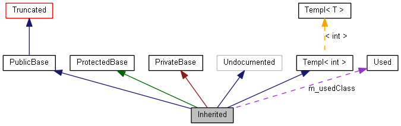

Halaman ini berisi keterangan cara membaca bagan yang dibangkitkan oleh doxygen.
Contoh:
/*! Invisible class because of truncation */
class Invisible { };
/*! Truncated class, inheritance relation is hidden */
class Truncated : public Invisible { };
/* Class not documented with doxygen comments */
class Undocumented { };
/*! Class that is inherited using public inheritance */
class PublicBase : public Truncated { };
/*! A template class */
template<class T> class Templ { };
/*! Class that is inherited using protected inheritance */
class ProtectedBase { };
/*! Class that is inherited using private inheritance */
class PrivateBase { };
/*! Class that is used by the Inherited class */
class Used { };
/*! Super class that inherits a number of other classes */
class Inherited : public PublicBase,
protected ProtectedBase,
private PrivateBase,
public Undocumented,
public Templ<int>
{
private:
Used *m_usedClass;
};
Apabila tag MAX_DOT_GRAPH_HEIGHT di file konfigurasi diset ke 240 kode di atas akan menghasilkan bagan berikut:

Kotak-kotak pada bagan di atas mempunyai arti sebagai berikut:
-
Kotak hitam merupakan struct atau kelas yang bersangkutan.
-
Kotak berbingkai hitam adalah struct atau kelas yang mempunyai dokumentasi.
-
Kotak dengan bingkai abu-abu adalah struct atau kelas tanpa dokumentasi.
-
Kotak dengan bingkai merah merupakan struct atau kelas yang didokumentasikan tetapitidak semua relasinya ditampilkan. Sebuah bagan akan terpotong apabila lebih besar daripada ukuran yang ditentukan.
Arti dari tanda-tanda panah adalah sebagai berikut:
-
Panah biru tua menandakan pewarisan publik.
-
Panah hijau tua untuk pewarisan diproteksi.
-
Panah merah tua untuk pewarisan privat.
-
Panah ungu putus-putus menandakan kelas tersebut berhubungan dengan kelas lain. Panah tersebut diberi judul sesuai dengan kelas atau struct tujuan.
-
Panah kuning putus-putus menandakan hubungan antara sebuah template kelas dan instance dari template tersebut. Panah tersebut diberi judul sesuai dengan parameter template yang digunakan.
 1.8.14
1.8.14